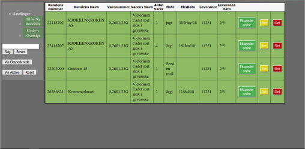

Victor Adam Ott Frank
Object Oriented Development
and Web
Hvem er jeg?
Release Early - Release Often
Jeg er 24 år, læser en erhvervsakademisk uddannelse som datamatiker og bor I Ølstykke med min kæreste. Jeg er analytisk skarp, nysgerrig og bestemt ikke bange for en udfordring. Derudover er jeg imødekommende og altid mødestabil.
Når jeg har fuldført min nuværende uddannelse i 2019, har jeg planer om at specialisere mig videre til bachelor niveau i IT-sikkerhed, da det er her, min interesse især ligger.
FACTS
Victor Adam Ott Frank
24 år
Datamatiker AK
Erfaring
1. Assistent | Sep 2014 - | v. Netto
Nøglebærer, primært lukkevagter. Overblik, struktur i arbejdsgangene og lokal ledelse af aftenhold.
Lageransvarlig | 2015 | v. Aldo
Lageransvarlig v. Aldo i Rødovre. Optælling, opsætning og kontrol af varer.
IT-medhjælper | Feb. 2017 - | Spunk Bar ApS.
Ad-hoc opgaver, samt opsætning af Mobilepay Buisness.
Java Udvikler | April 2018 | Morten Nørgaard Trade Udviklet en Java Spring MVC applikation, en oversigt over restordrer, med tilhørende GUI og en lokal database server.
Foretrukne Sprog
Anden Erfaring
Projects ↓
Project 1
Mit første erhvervsprojekt har jeg udviklet i samarbejde med MN-trade som havde brug for et nyt system til at holde styr på sine restordrer.
Til udviklingen gjorde brugte jeg en evolutionær/iterativt UP tilgang og under modelleringsfasen brugte jeg Unified Modeling Language (UML).
Selve applikationen er skrevet i Java Spring og efterfølgende hosted hos Amazon Web Services , ved hjælp af Amazon Elastic Beanstalk, Amazon Relational Database (som kører MySQL) og tilhørende Firewall.
Project 2

Dette projekt har jeg udviklet efter, at have besøgt mange forskellige sider for opskrifter og brugt apps som Pinterest, som alle bruger keywords og tags til at foreslå opskrifter.
Denne hjemmeside med tilhørende database, forsøgte istedet at gøre det muligt at søge i kategorier som er langt bredere.
Dette var med henblik på at gøre det nemmere og mere overskueligt at søge i forskellige køkkener, kød eller ej, og tid til tilberedelse.
Selve applikationen er skrevet i Java Spring og efterfølgende hosted hos Amazon Web Services, ved hjælp af Amazon Elastic Beanstalk, Amazon Relational Database (som kører MySQL) og tilhørende Firewall.